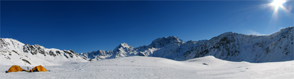
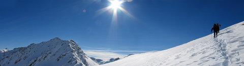

Verslag wintertrekking
maandag 14 februari 2005 | Reisverhalen
Hieronder volgt het nogal lang uitgevallen relaas van onze jongste wintertrekking nabij de Col du Grand Saint Bernard, op de grens tussen de Zwitserse en de Italiaanse Alpen. Zou het kunnen dat de weergoden deze weblog lezen? Mijn smeekbede van vorige week werd blijkbaar wel gehoord: we genoten van vier dagen volle zon tussen de besneeuwde toppen. Lees het verslag hieronder of bekijk gewoon even de foto’s (dank aan kpi).

Zondag, 6 februari
Na een nacht zonder files (en dat tijdens de krokus!) naderen we het punt waar autobestuurders in de zomer moeten kiezen hoe ze de Col du Grand Saint Bernard oversteken: via de tunnel of via de hoge bergpas. De pas is tijdens de wintermaanden gesloten door de tonnen sneeuw die hogerop op de weg rusten. Wij slaan er af en parkeren de wagen aan de voet van een bescheiden skigebied. Een felle winterzon in een staalblauwe hemel doet ons onmiddellijk naar de zonnebril grijpen. We verdelen het eten, water en whisky, passen de gamaschen en wandelstokken en beginnen tenslotte omstreeks half elf aan onze eerste beklimming. De besneeuwde asfaltweg van de pas doet tijdens de wintermaanden dienst als skipiste. De sneeuw is goed bewerkt waardoor we snel opschieten. Al na een kilometer slaan we af aan een klein bruggetje naar een zijflank van de pas. Hier moeten we de sneeuwschoenen aantrekken. Dit moment zal de geschiedenis ingaan waarop Tom en ikzelf voor het eerst op sneeuwschoenen zullen lopen. Pieter en Lieven hadden het vorig jaar al eens kunnen uitproberen. Nu, veel is er niet aan overigens: je loopt wat eend-achtig in het begin, maar al na enkele uren besef je niet eens meer dat je die dingen aanhebt.
Veel inlooptijd is ons echter niet gegund, want de klim naar ons eerste doel, de Col du Bastillon, is behoorlijk stevig. Bovendien is de zon verdwenen achter de bergen en beukt een ijzige wind genadeloos in op onze blozende wangen. We volgen een spoor dat tourskiërs (skiërs die te voet een berg oplopen en weer afglijden) in de flank hebben uitgesneden. Naarmate we stijgen, komt de zon af en toe nog eens boven de kammen piepen, wat enkele mooie winterprenten oplevert.
Helaas zakt de zon sneller dan wij kunnen lopen: niet lang daarna is het hele landschap in een koude schaduw gehuld. Ingepakt in vestkappen, mutsen, fleecen en windstoppers bereiken we omstreeks half vijf een plateau op ongeveer 2600m aan de voet van de Col du Bastillon waar we onze tenten opzetten vlakbij twee bevroren meertjes. De hoogste tijd: want iedereen heeft zijn eerste portie wel gehad voor vandaag. Alle veertig tenen beginnen pijnlijk te bevriezen.
Een uurtje later liggen we ingeduffeld in onze slaapzakken sneeuw te smelten in de voortent voor een soepje en een zakje trekkersmaaltijd van Mount Everest (chili con carne heerst!). Ik loop enkele minieme brandwonden op door met mijn blote handen de metalen pannetjes en het bestek te hanteren. Die dingen blijven bij -20°C gewoon plakken aan je vel! De hele organisatie van het kookgebeuren verloopt in onze tent (die van Tom en ikzelf) nogal chaotisch: materiaal vergeten in de rugzakken (die buiten blijven staan), een nooit eerder gebruikt vuurtje dat natuurlijk niet wil werken zoals het hoort, plaatsgebrek in de voortent, etc… Vloeken! In tent twee genieten Lieven en Pieter van het entertainment dat wij ongewild aanbieden. Tijdens de daarop volgende nacht lijken onze slaapzakken gelukkig bestand tegen de strenge sub-zero condities. Ik raak zelfs oververhit in mijn splinternieuwe Valandré Freya — which is nice.
Maandag, 7 februari
Nog vroeg in de nacht maakt een bescheiden sneeuwstorm zijn intrede. Althans, zo lijkt het toch. Onze tent schudt luid heen en weer en wordt onophoudelijk gebombardeerd door miljoenen ijspartikels. Dit blijft duren tot de ochtend. Ik sta als eerste op om te plassen (ook vergeten de dag ervoor). Tot mijn grote opluchting ziet de hemel niet grijs, maar even strak blauw als gisteren! Van een sneeuwstorm was helemaal geen sprake: een sterke wind raast over de oppervlakte van het plateau, sneeuw en ijs voor zich uit drijvend. Dat quasi ‘woestijnzand’ was de oorzaak van onze sneeuwstorm-illusie. De rugzakken zijn volledig verdwenen onder de stofsneeuw, net als al de rest van het materiaal in de voortent dat — vooral Tom en ik — hebben laten rondslingeren. Rondom de put waar onze tenten in staan, hebben zich aan de boorden overhangende ijssculpturen gevormd: een boeiend en hoopgevend decor voor mijn urinerende zelve, al voelen mijn tenen binnen de kortste keren opnieuw ijskoud aan. Ik kruip snel de warme slaapzak weer in om aan het ontbijt te beginnen. Die gebeurtenis verloopt al even wanordelijk als het avondmaal. Zowel de muesli, de koffie, de chocolade én de thee (het hele ontbijt met andere woorden) ligt nog in tent twee. En geloof me vrij: de ‘andere tent’ lijkt op zo’n moment driehonderd meter ver verwijderd. De extreme koude zorgt voor een harde les: we zweren beiden dat we voor de volgende nacht alles piekfijn zullen regelen voor we de slaapzak induiken.
Het doel voor vandaag is de oversteek maken van de Col du Bastillon naar de vallei met de Lacs du Ferret. Na anderhalf uur ontbijten, opbreken en klaarmaken voor de tocht beginnen we aan de klim. Alles verloopt oneindig veel langzamer in de winter: je moet immers je drinkwater koken voor de komende dag en juist dat koken verloopt nog eens extra traag door de hoogte en de koude. Na een uurtje klimmen bereiken we de kam die naar de Col du Bastillon loopt.

Het zicht bovenaan is toverachtig mooi in het stralende winterlicht. Als arenden kunnen we honderden kilometers ver kijken, onder andere tot aan het Massif du Mont Blanc. Maar het duurt niet lang voor we de grootste vergissing moeten inzien van onze tocht: het steile pad dat aan de andere kant van de Col afdaalt is helemaal ondergesneeuwd. Zonder touw is een afdaling gekkenwerk. Het is hier, op deze mooie plek dat we ons hele reisplan moeten overhoop halen. Een les in bescheidenheid, zeg maar: ook al plan je iets tot in de puntjes, de bergen blijven baas. We zullen terug moeten afdalen in het dal van waaruit we waren gekomen om dan onze vooropgestelde lus in de andere richting af te leggen. Er zit niets anders op. De teleurstelling wordt getemperd door een snelle en bijzonder leuke afdaling in de zachte diepsneeuw. Op sneeuwschoenen lijkt het dan alsof je op wolken loopt. De wind die tijdens de nacht onze tenten had gegeseld is nog steeds van de partij. De afdaling heeft af en toe iets weg van een poolexpeditie. Dezelfde situatie zou zonder zon wel eens bijzonder onaangenaam kunnen geweest zijn. We genieten onderweg geregeld van het schouwspel veroorzaakt door de jagende wind, de poedersneeuw en het schuin invallende zonlicht. Net drijvende, levende, witte kwik over de besneeuwde bodem van de vallei.
De keuze van onze volgende slaapplaats is niet eenvoudig. Omstreeks vier uur komt de weg van de bergpas opnieuw in zicht. We bevinden ons op een kleine richel in de flank van de vallei. Het is nog te vroeg om te stoppen met wandelen, maar volgens de kaart zijn verderop maar weinig alternatieven. We besluiten het rustig aan te doen en zullen ter plekke blijven. Het ideale moment voor een stukje worst, wat kaas en een borrel. De logistieke bezigheden van de daaropvolgende avond, nacht en ochtend verlopen heel wat vlotter dan de laatste keer. Dat heeft ongetwijfeld alles te maken met de betere organisatie van het materiaal in en rond onze tent, de mildere temperaturen en de beschutting die de richel ons biedt.
Dinsdag, 8 februari
De derde dag begint naar vast gewoonte met een stralende ochtendzon. Na een rustig ontbijt lopen we de flank af waarop we hebben gekampeerd. Aan een kleine stuwdam steken we de bevroren beek over die de vallei doorkruist. We bevinden ons nu opnieuw op verharde sneeuw van de bergpas samen met enkele tourskiërs die ons vergezellen tijdens de lange weg naar de Col du Grand Saint Bernard. Enkel aan een kleine kapel pauzeren we even om de suikerreserves aan te vullen. Tegen de middag bereiken we na een ijzige klim (geen zon op dat stuk van de col en een scherpe wind recht in het gezicht) het hoogste punt van de bergpas, l’Hospice, een eeuwenoud toevluchtsoord voor de reizigers en handelaars. De Col du Grand Saint Bernard heeft overigens zijn naam niet gestolen: de gelijknamige honden (met het tonnetje) werden hier voor het eerst gekweekt om slachtoffers van lawines op te sporen (inmiddels werden deze viervoeters vervangen door een kleiner hondenras). Enkele geslaagde en minder geslaagde namaakhondjes en embleempjes herinneren je al te regelmatig aan dit wapenfeit van de geestelijken die nu nog steeds de gebouwen bewonen en openstellen voor de talrijke zomer- en wintertoeristen (die al dan niet geïnteresseerd zijn in hun katholieke thema’s — Gerade du brauchst Jesus!). Wij grijpen ons bezoek aan l’Hospice aan om onze watervoorraad aan te vullen en op hetzelfde moment dankbaar gebruik te maken van de toiletten. Aan de walm in en rond de gebouwen te merken, blijken we niet de enige te zijn die op dit idee zijn gekomen.
We zetten onze tocht verder langsheen het grote meer aan de Col vanwaar we een duidelijk zich hebben op de rest van de route: de Pain de Sucre (2900m) en de Mont Fourchon (2902m). Beide toppen torenen quasi oninneembaar boven ons uit. Het lijkt onwezenlijk dat wij morgen van op één van die toppen zullen neerkijken op de plaats waar we nu lopen.
De weg op Italiaanse bodem loopt nog enige tijd verder naar beneden, via een diep ondergesneeuwde autotunnel, van waar we plotseling rechts moeten afslaan om in de brede vallei onder de twee toppen terecht te komen. Dit laatste stuk is steil en zuigt de laatste restjes energie uit onze arme benen. Onder het oranje licht van een late zon zijn we erg blij om ons in de slaapzak te kunnen nestelen. De zuid-oost oriëntatie van de vallei belooft een vroege zon, dus dat zit ook mee. Het lijkt een koude avond te worden. Ik vrees de hevige rukwinden die we de eerste dag hebben meegemaakt aan de Col du Bastillon. Aan de ijstekeningen van de vallei valt af te lezen dat het hier af en toe lelijk aan toe kan gaan. Gelukkig verloopt de nacht bijzonder rustig, zonder het minste windje (tenzij die van ons dan). Het is misschien net iets té rustig, want Tom en ik kunnen helemaal niet meer inslapen door de drukkende stilte. Rond 3.00 staan we even op om naar de sterren te kijken. Iedereen die ooit in de bergen kampeerde, hoef ik niet uit te leggen hoe dramatisch verschillend het hemelbeeld er wel niet is van dat van onze verlichte stad-staat. Helaas hangt aan die schoonheid een prijskaartje: pijnlijke vriestenen.
Woensdag, 9 februari
In het kort, de inmiddels gekende routine: zon, wateren, water smelten, thee of koffie, muesli en chocolade binnenspelen en dan de boel opruimen. Vandaag halen we de top van de Mont Fourchon! We besluiten onze rugzakken achter te laten op de overnachtingsplaats om het comfort van de klim enigszins te verhogen. Je wandelt een pak sneller zonder rugzak, daar hoef ik geen tekening bij te maken.
De Mont Fourchon geeft zich niet zomaar gewonnen. Op sneeuwschoenen blijft het een zeer behoorlijke klim van enkele uren. De top is er sneller dan je denkt, maar dat is slechts schijn: je bereikt eerst een klein ‘ondertopje’ dat je vooraf niet of nauwelijks opmerkte. De échte top ligt nog zo’n 20 meter hoger.
Dat laatste stukje is echt klauterwerk waar je de sneeuwschoenen voor moet uittrekken. Bovenaan: magnifiek! 360 graden pure postkaarten, al moet je natuurlijk geluk hebben met het weer. Op de top kunnen we de Col du Bastillon duidelijk zien liggen waar we twee dagen geleden onze plannen hebben moeten wijzigen. De blik op de ‘gemiste vallei’ vormt een magere troost voor de gebroken wandellus.
Na een half uurtje genieten dalen we terug af langs de zelfde route. We pikken de rugzakken weer op, en voor we het beseffen naderen we alweer l’Hospice. Daar doen we nog eens precies hetzelfde scenario over: onze flessen en hun beerputten vullen. We staan nu voor de keuze: of nog een nacht kamperen in de bergen of gewoon afdalen tot aan de auto aan de voet van de bergpas 5 kilometer naar beneden. We kiezen voor de laatste optie: als je geen doel meer voor ogen hebt, is kamperen een vrij zinloze bedoening. Anderhalf uur later bereiken we de auto, in de late schaduw van de bergen. We laten ons verleiden door een standaard hotdog in het cafetaria van het skigebied. De warmte binnen daalt op ons neer als een verlammende mokerslag. Doe daar nog eens een aantal Ename biertjes bij (die ik had meegenomen in de auto) en je kan je voorstellen dat de verwende Westerling in ons het opnieuw voor het zeggen krijgt: we verlangen alweer naar een bed en degelijk voedsel. We zijn rijp voor de terugweg.
Maar dat is buiten onze Volkswagen Caddy gerekend: die laat het, helemaal bevroren, totaal afweten. We proberen de auto al duwend tot leven te wekken, maar het is tevergeefs. In het duister van de tunnel (waar we de auto hebben proberen induwen) moet een lokale garagist de wagen komen takelen. Dat wordt een nachtje hotelzitten — op kosten van de verzekering natuurlijk. ’s Avonds wordt het nog gezellig. Ik herinner me vaag iets van een kaasfondue met peper en whisky.
time op 15 februari 2005
ziet er fantastisch uit, heb weer wa gemist, ach ja, ne mens moet wa opgeven voor zijn weekske skien, hoop er volgende keer wel bij te zijn. Voor diegenen die de stapkriebels alweer voelen opkomen: eerste week van mei, ingske vandewalle en time carion zouden dan misschien nog wel stapke wagen, ergens in de noordelijke alpen, waarschijnlijk vrijdag tot don/vr. (daar zitten voor de meesten onder ons enkele congedagen ). Liefhebbers laten maar iets weten.